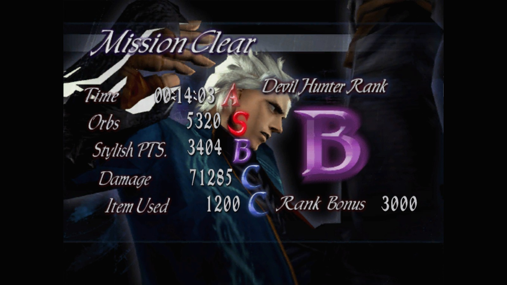

aqui você podera cadastrar seu desempenho dentro do jogo Devil May Cry 3. para isso, é preciso inserir as Letras dos campos Time ,Orbs, Stylish PTS, Damage e Item used que são exibidas no final das missões dentro do jogo, na área correta, como por exemplo: Stylish PTS "S"
assim depois de cadastrar suas missões, elas já ficaram disponível dentro da área desempenho no menu. lembre-se você também podera que cadastrar as missões secretas.